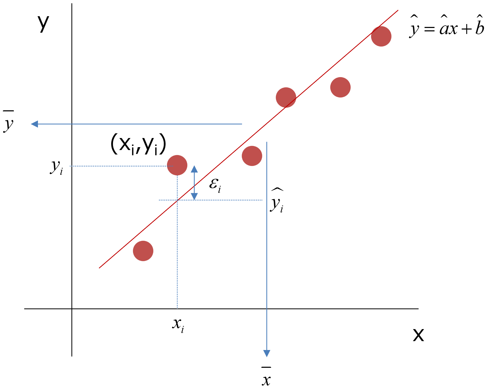

回帰分析の信頼区間-01
回帰分析の信頼空間，について，まとめてみました．
こちらなどのサイトにあるように，
直線回帰において，近似曲線だけでなく両側に放物線のような点線（もしくは色付け）
がよく論文などに見られます．
たぶん，近似曲線のもっともらしい範囲を示しているのだな？
と思っていましたが，なかなか理解できませんでした．
今回，区間推定，検定などを勉強して，なんとか理解できそうになったのでまとめてみました．
主に，こちら，のサイトを参考にさせていただきました（a，bをうちのHPに合わせて逆にしています）．
こちら，のサイトも参考にさせていただきました（Covで挫折しましたが．．
いくつかのトピックをHPにアップしましたが，簡単にまとめます．

まずは，データを直線近似します．その式は，
\( \Large \displaystyle y = ax+b \)
となります．
ここで，
X軸のデータは誤差を含まない
Y軸のデータに誤差を含む
が前提となります．つまり，
\( \Large \displaystyle y_i = ax_i+b + e_i \)
となります．この，a，bは真の値なので実際にはわかりません，推定するしかないのです．
これらからの推定値と実際の値の残差を，
\( \Large \displaystyle \varepsilon_i = y_i - \hat{y}_i \)
とすると，その二乗和は，
\( \Large \displaystyle S_{ \varepsilon \varepsilon} = \sum_{i=1}^n \varepsilon_i^2
=
\sum_{i=1}^n ( y_i - \hat{y}_i)^2
=
\sum_{i=1}^n ( y_i - \hat{a}x_i+\hat{b})^2 \)
この残差の二乗和が最小になる推定される二つのパラメータ，\( \Large \hat{a}, \hat{b} \)から，
\( \Large \displaystyle \hat{y}(x) = \hat{a}x+\hat{b} \)
を得ることができます．
また，ここ，から，
\( \Large \displaystyle \overline{ y} - b - a \displaystyle \overline{x} = 0 \)
\( \Large \displaystyle \overline{ y} = a \displaystyle \overline{x} +b \)
です．
推定値
これらのパラメータの導き出し方は，ここ，ここ，にまとめてあります．
\( \Large \hat{a} = \displaystyle \frac{ S_{xy} }{ S_{xx}} \)
\( \Large \hat{b} = \displaystyle \bar{y} -\frac{ S_{xy} }{ S_{xx}} \bar{x} \)
さらに，
\( \Large \displaystyle \bar{y} = \hat{a} \bar{x} + \hat{b} \)
の関係を導き出すことができます．ここで，
\( \Large \displaystyle S_{xx} = \displaystyle \sum_{i=1}^n (x_i - \bar{x})^2 = n \left\{ \overline{x^2} - \left( \bar{x} \right)^2 \right\} \)
です．
分散
\( \Large \displaystyle \hat{a}, \ \hat{b} \)の分散は，ここ，から，
\( \Large \displaystyle V \left[ \hat{a} \right] = \sigma_a^2 = \displaystyle \frac{ \sigma_y^2}{S_{xx}} \)
\( \Large \displaystyle V \left[ \hat{b} \right] =\sigma_b^2 = \sigma_y^2 \frac{ \overline{ x^2}}{ S_{xx}} =\sigma_y^2 \left\{ \frac{1}{n}+ \frac{\left( \bar{x} \right)^2 }{S_{xx}} \right\} \)
ここで，
\( \Large \displaystyle \sigma_y^2 = \sum_{i=1}^N ( y_i - \hat{y})^2 \)
です．
\( \Large \displaystyle \hat{y} \)の分散
推定したパラメータで求めたｙの値がどの程度分散を持つかというと，
\( \Large \displaystyle \hat{y} = \hat{a}x+\hat{b} \)
\( \Large \displaystyle \overline{ y} = a \displaystyle \overline{x} +b \)
から，
\( \Large \displaystyle \hat{y} = \overline{ y} +\hat{b} ( x - \bar{x} )\)
となります，したがって，分散は，
\( \Large \displaystyle V\left[\hat{y}\right] = V\left[\overline{ y}\right] +V\left[\hat{a} ( x - \bar{x} )\right]\)
となります．
第一項は，中心極限定理から，
\( \Large \displaystyle V\left[\overline{ y}\right] = \frac{ \sigma_y^2}{n} \)
となります．
第二項は，
\( \Large \displaystyle V\left[\hat{a} ( x - \bar{x} )\right] = ( x - \bar{x} )^2 V\left[\hat{a} \right] = \displaystyle ( x - \bar{x} )^2 \frac{ \sigma_y^2}{S_{xx}} \)
となるので，
\( \Large \displaystyle V\left[\hat{y}\right] = \frac{ \sigma_y^2}{n} ＋ \displaystyle
( x - \bar{x} )^2 \frac{ \sigma_y^2}{S_{xx}}
= \left[
\frac{ 1}{n} + \frac{ ( x - \bar{x} )^2}{S_{xx}} \right] \sigma_y^2 \)
yの分散
\( \Large \displaystyle \varepsilon_i = y_i - \hat{y}_i \)
から，
\( \Large \displaystyle y_i = \hat{y}_i + \varepsilon_i \)
となります，この分散値は，
\( \Large \displaystyle V\left[ y \right] = V\left[\hat{ y}\right] +V\left[ \varepsilon \right]\)
第一項は，上の計算から，
\( \Large \displaystyle V\left[\hat{y}\right] = \left[ \frac{ 1}{n} + \frac{ ( x - \bar{x} )^2}{S_{xx}} \right] \sigma_y^2 \)
第二項は，yの残差の分散なので，
\( \Large \displaystyle V\left[ \varepsilon \right] =\sigma_y^2 \)
となりますので，
\( \Large \displaystyle V\left[ y \right] = \left[
\frac{ 1}{n} + \frac{ ( x - \bar{x} )^2}{S_{xx}} \right] \sigma_y^2 + \sigma_y^2
=
\left[1+
\frac{ 1}{n} + \frac{ ( x - \bar{x} )^2}{S_{xx}} \right] \sigma_y^2\)
となります．
それぞれ，
\( \Large \displaystyle \hat{y} \)の分散
yの分散
を求めることができました．しかし，実際には，\( \Large \displaystyle \sigma_y^2 \)は求めることができないので不偏分散を使います．
その計算は，ここ（長いですが），にあり，
\(\Large \displaystyle \sigma^2 \rightarrow \displaystyle \frac{ E \left[ \displaystyle \sum_{i=1}^n \varepsilon_i^2 \right]}{n-2} = s^2 = Ve \)
となるので，
\( \Large \displaystyle \hat{y} \)の分散
\( \Large \displaystyle V\left[\hat{y}\right] = \left[ \frac{ 1}{n} + \frac{ ( x - \bar{x} )^2}{S_{xx}} \right] \sigma_y^2 = \left[ \frac{ 1}{n} + \frac{ ( x - \bar{x} )^2}{S_{xx}} \right] Ve \)
yの分散
\( \Large \displaystyle V\left[ y \right] = \left[1+ \frac{ 1}{n} + \frac{ ( x - \bar{x} )^2}{S_{xx}} \right] \sigma_y^2 = \left[1+ \frac{ 1}{n} + \frac{ ( x - \bar{x} )^2}{S_{xx}} \right] Ve\)
を計算すればいいことになります．
つまり，\( \Large \displaystyle \hat{y} \)の推定値は，
平均：\( \Large \displaystyle \hat{a}x+\hat{b} \)
分散：\( \Large \displaystyle \left[ \frac{ 1}{n} + \frac{ ( x - \bar{x} )^2}{S_{xx}} \right] Ve \)
の正規分布に従うことになります．
また，yの推定値は，
平均：\( \Large \displaystyle \hat{a}x+\hat{b} \)
分散：\( \Large \displaystyle \left[ 1+\frac{ 1}{n} + \frac{ ( x - \bar{x} )^2}{S_{xx}} \right] Ve \)
の正規分布に従うことになります．
こうなると，勉強してきたｔ検定が利用できます．
注意すべきは，
ｘによって分散値が変化する
ことと，
ｔ検定における自由度はｎ-2となる
ことです．なぜｎ-2になるかは，ここでは，
二つのパラメータを求めるので自由度は2つ減る
と考えましょう（安易かもしれませんが．．．）
信頼区間
信頼区間は，ここ，にあるように，
\(\Large \displaystyle - t_{\alpha/2} (n-1) \hspace{12 pt}\leq \hspace{12 pt} \frac{\mu - \bar{x}}{ \sqrt{\frac{\color{red}{s}^2}{n}}} \hspace{12 pt} \leq \hspace{12 pt} t_{\alpha/2} (n-1) \)
でしたので，\( \Large \displaystyle \hat{y} \)の場合は，
\(\Large \displaystyle - t_{\alpha/2} (n-1) \hspace{12 pt}\leq \hspace{12 pt} \frac{\hat{a}x+\hat{b}}{ \sqrt{\left[ \frac{ 1}{n} + \frac{ ( x - \bar{x} )^2}{S_{xx}} \right] Ve}} \hspace{12 pt} \leq \hspace{12 pt} t_{\alpha/2} (n-1) \)
書き換えると，
\(\Large \displaystyle \hat{a}x+\hat{b} \hspace{12 pt} \pm \hspace{12 pt} t_{\alpha/2} (n-1) \cdot \sqrt{\left[ \frac{ 1}{n} + \frac{ ( x - \bar{x} )^2}{S_{xx}} \right] Ve} \)
yの場合は，
\(\Large \displaystyle - t_{\alpha/2} (n-1) \hspace{12 pt}\leq \hspace{12 pt} \frac{\hat{a}x+\hat{b}}{ \sqrt{\left[ 1 + \frac{ 1}{n} + \frac{ ( x - \bar{x} )^2}{S_{xx}} \right] Ve}} \hspace{12 pt} \leq \hspace{12 pt} t_{\alpha/2} (n-1) \)
書き換えると，
\(\Large \displaystyle \hat{a}x+\hat{b} \hspace{12 pt} \pm \hspace{12 pt} t_{\alpha/2} (n-1) \cdot \sqrt{\left[ 1 + \frac{ 1}{n} + \frac{ ( x - \bar{x} )^2}{S_{xx}} \right] Ve} \)
の線を引けばいいことになります．
では，実際にデータから回帰直線の信頼区間を計算していきましょう．